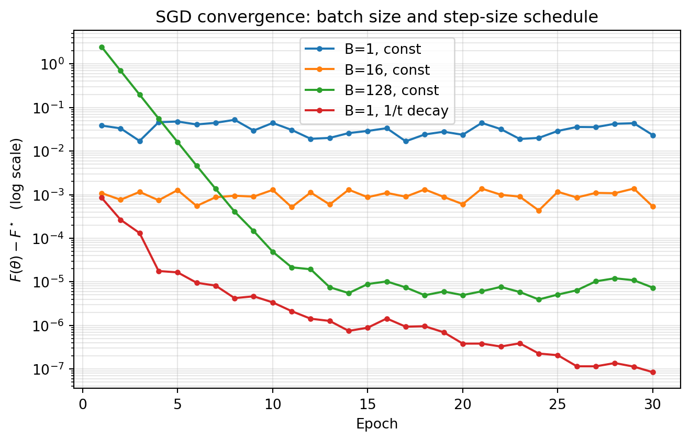

Modern machine learning rests on a deceptively simple idea. Instead of computing the exact gradient of a loss function over an entire dataset, we estimate that gradient from a small random sample and take a step. This substitution, trading exactness for speed, is the engine behind training models on datasets too large to fit in memory and too costly to process in full at every iteration. The mathematics that justifies it reaches back to the 1950s, yet its consequences remain at the frontier of contemporary research. This chapter develops the theory of stochastic optimization, beginning with the classical stochastic approximation framework, then examining the structure of gradient noise, the variance reduction methods that tame it, the practical and theoretical effects of mini-batching, and finally the convergence behavior that emerges in both convex and non-convex settings.
48.1 1. Stochastic Approximation and the Robbins-Monro Conditions
48.1.1 1.1 The Root-Finding Origin
Stochastic optimization did not begin as an optimization problem. It began as a root-finding problem. In 1951, Herbert Robbins and Sutton Monro asked how to locate the root \(\theta^\star\) of a function \(M(\theta)\) when one cannot observe \(M(\theta)\) directly but can only draw noisy measurements \(Y(\theta) = M(\theta) + \varepsilon\), where \(\varepsilon\) is zero-mean noise. Their proposal was an iterative scheme of striking simplicity:
\[
\theta_{n+1} = \theta_n - a_n Y(\theta_n),
\]
where \(a_n\) is a sequence of positive step sizes shrinking toward zero. The connection to optimization follows immediately once we recognize that minimizing a differentiable objective \(F(\theta)\) amounts to finding a root of its gradient \(\nabla F(\theta)\). If we can only observe noisy gradients, the Robbins-Monro recursion becomes stochastic gradient descent.
48.1.2 1.2 The Step-Size Conditions
The genius of the Robbins-Monro analysis lies in the conditions they imposed on the step-size sequence \(\{a_n\}\). Two requirements, taken together, guarantee convergence to the root with probability one under mild assumptions. The first condition is
\[
\sum_{n=1}^{\infty} a_n = \infty.
\]
This divergence requirement ensures the iterates retain enough cumulative energy to travel an arbitrary distance. No matter how far the starting point sits from the solution, the steps must not sum to a finite total, or the algorithm could stall before arriving. The second condition is
\[
\sum_{n=1}^{\infty} a_n^2 < \infty.
\]
This summable-squares requirement forces the steps to shrink fast enough that the accumulated noise variance remains finite. Intuitively, the first condition lets the iterate reach any target, while the second prevents the random fluctuations from perpetually knocking it away. The canonical choice \(a_n = a/n\) satisfies both, since the harmonic series diverges while the series of inverse squares converges. A broader family \(a_n = a / n^p\) for \(1/2 < p \le 1\) also qualifies.
We can derive the conditions rather than merely assert them. Consider the squared distance to the root, \(D_n = \mathbb{E}\,\|\theta_n - \theta^\star\|^2\). Expanding the recursion \(\theta_{n+1} = \theta_n - a_n Y(\theta_n)\) and using \(Y = M + \varepsilon\) with \(M(\theta) = \nabla F(\theta)\) gives
The middle term is the signal: by convexity of \(F\) it is nonnegative and drives \(D_n\) downward, contributing a cumulative decrease proportional to \(\sum_n a_n\). For that cumulative pull to overcome any starting distance, the sum must diverge, which is exactly the first condition. The last term is the noise: since \(\mathbb{E}\,\|Y\|^2 = \|\nabla F\|^2 + \mathbb{E}\,\|\varepsilon\|^2\) is bounded below by the irreducible variance even at the root, it injects an error of order \(a_n^2 \sigma^2\) at every step. The total injected error is proportional to \(\sum_n a_n^2\), and for \(D_n\) to settle rather than accumulate unbounded fluctuation, this sum must be finite, which is the second condition. The two requirements are thus the signal and noise halves of a single distance-contraction inequality.
These conditions formalize a tension that recurs throughout stochastic optimization. Large steps move quickly but amplify noise. Small steps suppress noise but crawl. The Robbins-Monro conditions describe the precise envelope within which a decaying step size threads this tension and still converges. The deep result, refined over subsequent decades by Blum, Dvoretzky, and others, is that under these conditions and suitable regularity, \(\theta_n \to \theta^\star\) almost surely.
48.1.3 1.3 From Approximation to Learning
The bridge from this abstract recursion to machine learning was built gradually. By treating each training example as a noisy sample of the population gradient, one obtains stochastic gradient descent (SGD). Write the objective as a finite average over \(N\) examples,
where \(f_i\) is the loss on the \(i\)-th example. The full gradient \(\nabla F(\theta)\) costs \(O(N)\) to evaluate. SGD replaces it with the gradient \(\nabla f_i(\theta)\) of a single randomly chosen example, an unbiased estimate that costs \(O(1)\):
Because \(\mathbb{E}[\nabla f_{i_n}(\theta)] = \nabla F(\theta)\), the expected update direction is the true descent direction, and the Robbins-Monro framework applies. This unbiasedness is the load-bearing property. Everything that follows, including the convergence guarantees and the variance reduction machinery, is organized around preserving or exploiting it.
48.2 2. The Role of Gradient Noise
48.2.1 2.1 Decomposing the Stochastic Gradient
Let us write the stochastic gradient as the true gradient plus a noise term:
where \(\xi_n = \nabla f_{i_n}(\theta_n) - \nabla F(\theta_n)\) has conditional mean zero. The behavior of any stochastic optimizer is governed almost entirely by the statistics of \(\xi_n\), in particular its covariance. Denote the variance bound by
This single scalar appears in nearly every convergence theorem in the field. It quantifies how much the per-example gradient scatters around the population gradient, and it sets the floor on how precisely a constant-step-size method can localize the optimum.
Because the index \(i_n\) is drawn uniformly, the variance has an explicit form. The covariance of the single-example gradient is the population covariance of the component gradients,
and its trace is the scalar variance \(\mathbb{E}\,\|\xi_n\|^2 = \operatorname{tr}\Sigma(\theta)\). Two features deserve emphasis. First, the variance depends on \(\theta\): it is generally largest far from the optimum and, for problems where all components share a common minimizer, can vanish at \(\theta^\star\), a property called interpolation that modern overparameterized networks approximately satisfy. Second, the variance does not depend on the dimension through \(N\) at all; it is a property of how the per-example gradients disagree, which is what makes the \(O(1)\) cost of an SGD step so valuable.
48.2.2 2.2 Noise as Obstacle and as Asset
Gradient noise plays a dual role that is easy to misread. On one hand it is an obstacle. Near a minimizer the true gradient vanishes but the noise does not, so the iterate cannot settle; it diffuses within a region whose radius scales with \(a \sigma\). This is precisely why a constant step size cannot drive the loss to its exact minimum and why the Robbins-Monro decay is needed for exact convergence. On the other hand the noise is an asset. In non-convex landscapes the random perturbations help the iterate escape saddle points and shallow local minima that would trap a deterministic method. The injected randomness behaves like a controlled exploration mechanism.
A useful way to see the diffusion is through a continuous-time lens. Under a small step size, SGD approximates the stochastic differential equation
where \(\Sigma(\theta)\) is the gradient noise covariance and \(W_t\) is Brownian motion. The drift term pulls toward minima while the diffusion term, scaled by the step size, spreads the iterate out. This picture explains why the ratio of step size to batch size functions as an effective temperature, a theme we return to when discussing generalization.
48.2.3 2.3 Structure in the Noise
The covariance \(\Sigma(\theta)\) is far from isotropic. Empirically, in deep networks it aligns closely with the curvature of the loss, so the noise is largest along the very directions where the loss is most sensitive. This anisotropy is not incidental. It biases the stationary distribution of SGD toward flatter regions of the landscape, a property frequently invoked to explain why SGD-trained networks generalize well. The shape of the noise, not merely its magnitude, carries information about where the optimizer will ultimately come to rest.
48.3 3. Variance Reduction Methods
48.3.1 3.1 The Motivation
The persistent variance \(\sigma^2\) exacts a real price. For strongly convex objectives, full-batch gradient descent converges linearly, meaning the error contracts by a constant factor each iteration and reaches accuracy \(\epsilon\) in \(O(\log(1/\epsilon))\) steps. Plain SGD, by contrast, converges only sublinearly, at rate \(O(1/n)\), because the noise floor forces the step size to decay. The gap is enormous. Variance reduction methods close it for the important special case of finite-sum objectives by exploiting the fact that the noise comes from a known, finite collection of component gradients rather than from an unbounded stream.
48.3.2 3.2 Stochastic Average Gradient (SAG)
The Stochastic Average Gradient method, introduced by Le Roux, Schmidt, and Bach and later expanded by Schmidt, Le Roux, and Bach in 2017, maintains a memory of the most recent gradient computed for each of the \(N\) components. At each iteration it samples one index \(i_n\), recomputes \(\nabla f_{i_n}\), updates that single entry in the memory table, and steps along the average of all stored gradients:
where \(y_i^{(n)}\) is the most recently stored gradient for component \(i\), refreshed only for \(i = i_n\) at each step. Because the average incorporates information from all components, its variance shrinks as the stored gradients converge to the true component gradients near the optimum. SAG achieves a linear convergence rate for strongly convex problems while still touching only one example per iteration. The cost is a memory table of size \(O(N d)\) for \(d\)-dimensional gradients, or \(O(N)\) in the common case of linear models where each gradient is a scalar times a stored data point. A subtle feature of SAG is that its update direction is a biased estimate of the full gradient, which complicated the original analysis.
The SVRG method of Johnson and Zhang, published in 2013, achieves comparable variance reduction without the large memory table. It operates in epochs. At the start of each epoch it computes a full-batch gradient at a snapshot point \(\tilde{\theta}\), an expensive \(O(N)\) operation done once per epoch. Within the epoch it then takes inner steps using the variance-reduced direction
The construction is elegant. The first two terms form a correction that has zero expectation, since \(\mathbb{E}[\nabla f_{i_n}(\tilde{\theta})] = \nabla F(\tilde{\theta})\), so the estimator remains unbiased: \(\mathbb{E}[g_n] = \nabla F(\theta_n)\). The crucial point is variance. The estimator is a control variate: it subtracts a random quantity \(\nabla f_{i_n}(\tilde{\theta})\) and adds back its known mean \(\nabla F(\tilde{\theta})\). The variance of \(g_n\) is governed by the variance of \(\nabla f_{i_n}(\theta_n) - \nabla f_{i_n}(\tilde{\theta})\), and by smoothness of each component with constant \(L\),
As both \(\theta_n\) and \(\tilde{\theta}\) approach the optimum, the right side shrinks toward zero, so the variance of \(g_n\) collapses rather than plateauing at \(\sigma^2\). This is the mechanism that restores linear convergence. SVRG trades the SAG memory table for a periodic full gradient pass, a tradeoff that is often favorable when \(N\) is very large or memory is constrained.
48.3.4 3.4 The Common Principle and Its Limits
SAG and SVRG, along with related methods such as SAGA which blends features of both, share one principle. They use stale or snapshot information about the component gradients to construct a control variate that cancels variance as the iterates converge. The reduction in variance is what buys back the linear rate. These methods shine on finite-sum problems with moderate condition numbers and were a major theoretical achievement of the early 2010s.
Their practical footprint in deep learning, however, has been limited. The reasons are instructive. Variance reduction assumes the component gradients change slowly enough that stale snapshots remain useful, but in deep networks the parameters move so rapidly through a high-dimensional non-convex landscape that snapshots become obsolete almost immediately. Defazio and Bottou documented in 2019 that standard variance reduction methods fail to outperform plain SGD on large convolutional networks, in part because techniques like data augmentation, batch normalization, and dropout inject additional randomness that breaks the finite-sum structure these methods rely on. Variance reduction thus remains a cornerstone of convex optimization theory while occupying a narrower niche in deep learning practice.
48.4 4. Mini-Batching and Its Effects
48.4.1 4.1 The Mini-Batch Gradient
Between the extremes of single-example SGD and full-batch gradient descent lies mini-batching, the dominant practice in modern training. A mini-batch of size \(B\) draws a random subset \(\mathcal{B}_n\) of indices and averages their gradients:
This estimator is still unbiased, but its variance is reduced by a factor of \(B\). The reason is the standard variance-of-an-average argument. When the \(B\) indices are drawn independently, the gradient noise terms \(\xi_i\) are independent and identically distributed with covariance \(\Sigma(\theta)\), so
where the cross terms vanish because the noises are uncorrelated. The variance falls as \(1/B\), so the noise standard deviation falls as \(1/\sqrt{B}\): halving the noise requires quadrupling the batch, the first hint of diminishing returns. When sampling without replacement from a finite dataset the bound tightens by the finite-population correction factor \((N - B)/(N - 1)\), which drives the variance to zero as \(B \to N\) and the mini-batch gradient becomes the exact full gradient.
Mini-batching is therefore the simplest variance reduction technique of all, achieved not through clever control variates but by direct averaging. Its appeal is twofold. Statistically it shrinks the noise. Computationally it exposes parallelism, since the \(B\) gradients can be computed simultaneously across the lanes of a GPU or across multiple devices, making a mini-batch step nearly as fast in wall-clock time as a single-example step up to hardware limits.
48.4.2 4.2 The Effect on Convergence
The variance reduction from batching changes the convergence picture in a specific way. For a constant step size, the asymptotic noise floor of SGD scales as \(a \sigma^2 / B\). Larger batches lower the floor, allowing the iterate to localize the optimum more tightly, or equivalently allowing a larger step size at the same noise level. This is the basis of the widely used linear scaling rule. When the batch size is multiplied by \(k\), the step size should also be multiplied by \(k\) to keep the effective noise temperature, the ratio \(a / B\), roughly constant. Goyal and collaborators demonstrated in 2017 that this rule, combined with a brief warmup, lets very large batches train ImageNet to baseline accuracy in under an hour.
Yet the benefit of batching exhibits diminishing returns. There is a critical batch size below which doubling the batch nearly halves the number of steps required, the regime of perfect scaling, and above which additional examples per batch buy little extra progress per step. McCandlish and coauthors characterized this critical batch size in 2018 in terms of the gradient noise scale, a measurable quantity that predicts how much data parallelism a given problem can usefully absorb. Past that point one is paying for more computation per step without a commensurate reduction in steps, so the total compute rises while wall-clock time stops falling.
48.4.3 4.3 The Effect on Generalization
Mini-batch size influences not only how fast a model trains but how well it generalizes, and here the story is more delicate. A well-known body of empirical work, notably by Keskar and colleagues in 2017, observed that very large batches tend to converge to sharp minima of the loss surface, which generalize worse than the flat minima favored by small-batch training. The continuous-time picture from Section 2 offers an explanation. The effective temperature of the SGD diffusion scales with \(a / B\), so a large batch lowers the temperature, weakens the exploration that drives the iterate toward broad flat basins, and lets it settle into a nearby sharp minimum.
This account is intuitive but not the complete story. Later work showed that the apparent generalization penalty of large batches can be substantially reduced by adjusting the step size, extending the training budget, and adding warmup, which suggests the effect is mediated by the number of optimization steps and the effective temperature rather than by batch size as such. The practical upshot is that batch size, step size, and training duration form a coupled system. One cannot tune a single knob in isolation and expect the others to be irrelevant. Generalization emerges from their joint setting.
48.5 5. Convergence Intuition
48.5.1 5.1 Convex Objectives
For convex problems the convergence theory is mature and the intuitions are clean. Consider a convex, \(L\)-smooth objective optimized by SGD with the variance bound \(\sigma^2\). With an appropriately decaying step size satisfying the Robbins-Monro conditions, the averaged iterate satisfies
in the general convex case, and the rate improves to \(O(1/n)\) when the objective is strongly convex. These rates are slower than the linear rate of full-batch gradient descent, and the difference is entirely attributable to the noise term \(\sigma^2\). If the variance were zero, as it effectively becomes for variance-reduced methods near the optimum, the linear rate would be recovered.
The \(O(1/\sqrt{n})\) rate is not a weakness of any particular algorithm but a fundamental limit. For the broad class of stochastic first-order methods that access the objective only through noisy gradients, no algorithm can do asymptotically better in the worst case. This lower bound, established in the stochastic optimization literature, tells us that SGD with averaging is already optimal in its dependence on the noise. The lesson is that one cannot out-engineer the noise floor with cleverer step rules alone. Reducing the constant \(\sigma^2\), through batching or variance reduction or better-conditioned models, is the only path to faster stochastic convergence.
48.5.2 5.2 The Role of Smoothness and Strong Convexity
Two structural properties drive the convex rates. Smoothness, the condition that \(\nabla F\) is \(L\)-Lipschitz, bounds how fast the gradient can change and thereby caps the safe step size at roughly \(1/L\). Strong convexity, the condition that \(F\) curves upward at least quadratically with parameter \(\mu\), ensures the gradient grows with distance from the optimum and so provides a contraction. Their ratio \(\kappa = L / \mu\), the condition number, governs the difficulty of the problem. Well-conditioned problems with small \(\kappa\) converge quickly; ill-conditioned ones with large \(\kappa\) crawl, which is why preconditioning and adaptive methods that rescale the geometry are so valuable in practice.
48.5.3 5.3 Non-Convex Objectives
Deep learning lives in the non-convex world, where the clean guarantees of convexity no longer hold. We cannot in general promise convergence to a global minimum, and indeed locating the global minimum of a generic non-convex function is computationally intractable. The theory therefore lowers its ambitions and asks instead for convergence to a stationary point, a place where the gradient is small. The standard result is that SGD on a smooth non-convex objective satisfies
meaning the smallest gradient norm encountered over \(n\) steps shrinks at this rate. This guarantees the iterate visits a near-stationary point but says nothing about whether that point is a good minimum.
What rescues non-convex optimization in practice is the structure of the problems and the role of noise. First, saddle points rather than poor local minima are the dominant obstacle in high-dimensional landscapes, since a critical point is far more likely to be a saddle than a minimum when there are many directions to curve in. Second, gradient noise actively helps the iterate escape these saddles. A deterministic method can stall on a saddle indefinitely, but the random perturbations of SGD push it off the unstable directions, and results by Ge and collaborators and by Jin and coauthors showed that noisy gradient methods escape strict saddle points efficiently and reach approximate local minima in polynomial time. Third, the loss landscapes of overparameterized networks turn out to be unusually benign, with most local minima achieving low loss and connected by low-loss paths, so the distinction between local and global minima matters far less than the convex worst case would suggest.
48.5.4 5.4 Synthesis
The arc from Robbins and Monro to modern deep learning is a story of one substitution and its ramifications. Replace the exact gradient with a noisy estimate, accept the resulting variance, and then spend the rest of the theory either suppressing that variance when exact convergence is needed or harnessing it when exploration is needed. The Robbins-Monro conditions tell us how to schedule the step size so the noise does not derail convergence. The variance reduction methods show how to eliminate the noise floor for finite sums. Mini-batching offers a tunable dial between noise and parallelism that couples to generalization through the effective temperature. And the convergence theory, sharp for convex problems and partial but encouraging for non-convex ones, explains both the limits we cannot evade and the structure that makes deep learning work anyway. Stochastic optimization is not a single algorithm but a way of thinking, in which randomness is neither purely friend nor purely foe but a resource to be scheduled, reduced, or exploited as the objective demands.
48.6 6. Stochastic Optimization in Practice
The theory above makes concrete predictions: at a constant step size the noise floor scales as \(a\sigma^2/B\), so larger batches localize the optimum more tightly, while a Robbins-Monro decaying schedule drives the suboptimality below any fixed floor. The following experiment tests these predictions directly on a strongly convex least-squares problem, where the optimum is known in closed form from the normal equations and we can plot the true suboptimality \(F(\theta_n) - F(\theta^\star)\).
Code
import numpy as npimport matplotlib.pyplot as pltrng = np.random.default_rng(0)# Strongly convex least-squares: F(theta) = (1/2N) sum (x_i^T theta - y_i)^2N, d =4000, 20X = rng.standard_normal((N, d))theta_true = rng.standard_normal(d)y = X @ theta_true +0.5* rng.standard_normal(N)# Exact optimum via the normal equationstheta_star = np.linalg.solve(X.T @ X, X.T @ y)F_star =0.5* np.mean((X @ theta_star - y) **2)def full_loss(theta):return0.5* np.mean((X @ theta - y) **2)def grad_batch(theta, idx): Xb, yb = X[idx], y[idx]return Xb.T @ (Xb @ theta - yb) /len(idx)def sgd(batch_size, step, n_epochs=30, decay=False): theta = np.zeros(d) losses, t = [], 0 steps_per_epoch = N // batch_sizefor _ inrange(n_epochs): perm = rng.permutation(N)for k inrange(steps_per_epoch): idx = perm[k * batch_size:(k +1) * batch_size] a = step / (1+0.01* t) if decay else step # Robbins-Monro decay theta -= a * grad_batch(theta, idx) t +=1 losses.append(full_loss(theta) - F_star)return np.array(losses)curves = {"B=1, const": sgd(1, 0.02),"B=16, const": sgd(16, 0.02),"B=128, const": sgd(128, 0.02),"B=1, 1/t decay": sgd(1, 0.05, decay=True),}print(f"F* = {F_star:.6f}")for name, c in curves.items():print(f"{name:16s} final suboptimality = {c[-1]:.3e}")plt.figure(figsize=(7, 4.5))for name, c in curves.items(): plt.semilogy(np.arange(1, len(c) +1), c, marker="o", ms=3, label=name)plt.xlabel("Epoch")plt.ylabel(r"$F(\theta) - F^\star$(log scale)")plt.title("SGD convergence: batch size and step-size schedule")plt.legend()plt.grid(True, which="both", alpha=0.3)plt.tight_layout()plt.show()
F* = 0.125094
B=1, const final suboptimality = 2.321e-02
B=16, const final suboptimality = 5.327e-04
B=128, const final suboptimality = 7.354e-06
B=1, 1/t decay final suboptimality = 8.443e-08

The output confirms the theory. At a constant step size the three batch sizes settle at progressively lower noise floors, each roughly an order of magnitude apart, matching the \(1/B\) scaling of the gradient variance. The single-example run with a \(1/t\) decaying step size, by contrast, keeps descending well below every constant-step floor, exactly the behavior the Robbins-Monro conditions promise: a decaying schedule trades early speed for exact convergence.
48.6.1 Cross-Language Perspective
The same SGD inner loop appears across the scientific computing ecosystem. The Python version below is executable; the Julia and Rust versions are illustrative, showing how the identical update rule maps onto a just-in-time numerical language and a systems language.
Robbins, H. and Monro, S. (1951). A Stochastic Approximation Method. The Annals of Mathematical Statistics, 22(3), 400-407. https://doi.org/10.1214/aoms/1177729586
Bottou, L., Curtis, F. E., and Nocedal, J. (2018). Optimization Methods for Large-Scale Machine Learning. SIAM Review, 60(2), 223-311. https://doi.org/10.1137/16M1080173
Schmidt, M., Le Roux, N., and Bach, F. (2017). Minimizing Finite Sums with the Stochastic Average Gradient. Mathematical Programming, 162(1-2), 83-112. https://doi.org/10.1007/s10107-016-1030-6
Johnson, R. and Zhang, T. (2013). Accelerating Stochastic Gradient Descent using Predictive Variance Reduction. Advances in Neural Information Processing Systems (NeurIPS), 26, 315-323. https://papers.nips.cc/paper/2013/hash/ac1dd209cbcc5e5d1c6e28598e8cbbe8-Abstract.html
Defazio, A., Bach, F., and Lacoste-Julien, S. (2014). SAGA: A Fast Incremental Gradient Method With Support for Non-Strongly Convex Composite Objectives. Advances in Neural Information Processing Systems (NeurIPS), 27, 1646-1654. https://papers.nips.cc/paper/2014/hash/ede7e2b6d13a41ddf9f4bdef84fdc737-Abstract.html
Defazio, A. and Bottou, L. (2019). On the Ineffectiveness of Variance Reduced Optimization for Deep Learning. Advances in Neural Information Processing Systems (NeurIPS), 32. https://papers.nips.cc/paper/2019/hash/84d2004bf28a2095230e8e14993d398d-Abstract.html
Goyal, P., Dollar, P., Girshick, R., et al. (2017). Accurate, Large Minibatch SGD: Training ImageNet in 1 Hour. arXiv preprint. https://doi.org/10.48550/arXiv.1706.02677
Keskar, N. S., Mudigere, D., Nocedal, J., Smelyanskiy, M., and Tang, P. T. P. (2017). On Large-Batch Training for Deep Learning: Generalization Gap and Sharp Minima. International Conference on Learning Representations (ICLR). https://doi.org/10.48550/arXiv.1609.04836
McCandlish, S., Kaplan, J., Amodei, D., and OpenAI Dota Team (2018). An Empirical Model of Large-Batch Training. arXiv preprint. https://doi.org/10.48550/arXiv.1812.06162
Ge, R., Huang, F., Jin, C., and Yuan, Y. (2015). Escaping From Saddle Points: Online Stochastic Gradient for Tensor Decomposition. Conference on Learning Theory (COLT), PMLR 40, 797-842. https://proceedings.mlr.press/v40/Ge15.html
Jin, C., Ge, R., Netrapalli, P., Kakade, S. M., and Jordan, M. I. (2017). How to Escape Saddle Points Efficiently. International Conference on Machine Learning (ICML), PMLR 70, 1724-1732. https://proceedings.mlr.press/v70/jin17a.html
Ghadimi, S. and Lan, G. (2013). Stochastic First- and Zeroth-Order Methods for Nonconvex Stochastic Programming. SIAM Journal on Optimization, 23(4), 2341-2368. https://doi.org/10.1137/120880811
Source Code
# Stochastic Optimization MethodsModern machine learning rests on a deceptively simple idea. Instead of computing the exact gradient of a loss function over an entire dataset, we estimate that gradient from a small random sample and take a step. This substitution, trading exactness for speed, is the engine behind training models on datasets too large to fit in memory and too costly to process in full at every iteration. The mathematics that justifies it reaches back to the 1950s, yet its consequences remain at the frontier of contemporary research. This chapter develops the theory of stochastic optimization, beginning with the classical stochastic approximation framework, then examining the structure of gradient noise, the variance reduction methods that tame it, the practical and theoretical effects of mini-batching, and finally the convergence behavior that emerges in both convex and non-convex settings.## 1. Stochastic Approximation and the Robbins-Monro Conditions### 1.1 The Root-Finding OriginStochastic optimization did not begin as an optimization problem. It began as a root-finding problem. In 1951, Herbert Robbins and Sutton Monro asked how to locate the root $\theta^\star$ of a function $M(\theta)$ when one cannot observe $M(\theta)$ directly but can only draw noisy measurements $Y(\theta) = M(\theta) + \varepsilon$, where $\varepsilon$ is zero-mean noise. Their proposal was an iterative scheme of striking simplicity:$$\theta_{n+1} = \theta_n - a_n Y(\theta_n),$$where $a_n$ is a sequence of positive step sizes shrinking toward zero. The connection to optimization follows immediately once we recognize that minimizing a differentiable objective $F(\theta)$ amounts to finding a root of its gradient $\nabla F(\theta)$. If we can only observe noisy gradients, the Robbins-Monro recursion becomes stochastic gradient descent.### 1.2 The Step-Size ConditionsThe genius of the Robbins-Monro analysis lies in the conditions they imposed on the step-size sequence $\{a_n\}$. Two requirements, taken together, guarantee convergence to the root with probability one under mild assumptions. The first condition is$$\sum_{n=1}^{\infty} a_n = \infty.$$This divergence requirement ensures the iterates retain enough cumulative energy to travel an arbitrary distance. No matter how far the starting point sits from the solution, the steps must not sum to a finite total, or the algorithm could stall before arriving. The second condition is$$\sum_{n=1}^{\infty} a_n^2 < \infty.$$This summable-squares requirement forces the steps to shrink fast enough that the accumulated noise variance remains finite. Intuitively, the first condition lets the iterate reach any target, while the second prevents the random fluctuations from perpetually knocking it away. The canonical choice $a_n = a/n$ satisfies both, since the harmonic series diverges while the series of inverse squares converges. A broader family $a_n = a / n^p$ for $1/2 < p \le 1$ also qualifies.We can derive the conditions rather than merely assert them. Consider the squared distance to the root, $D_n = \mathbb{E}\,\|\theta_n - \theta^\star\|^2$. Expanding the recursion $\theta_{n+1} = \theta_n - a_n Y(\theta_n)$ and using $Y = M + \varepsilon$ with $M(\theta) = \nabla F(\theta)$ gives$$D_{n+1} = D_n - 2 a_n\, \mathbb{E}\big[\langle \theta_n - \theta^\star,\, \nabla F(\theta_n)\rangle\big] + a_n^2\, \mathbb{E}\,\|Y(\theta_n)\|^2.$$The middle term is the signal: by convexity of $F$ it is nonnegative and drives $D_n$ downward, contributing a cumulative decrease proportional to $\sum_n a_n$. For that cumulative pull to overcome any starting distance, the sum must diverge, which is exactly the first condition. The last term is the noise: since $\mathbb{E}\,\|Y\|^2 = \|\nabla F\|^2 + \mathbb{E}\,\|\varepsilon\|^2$ is bounded below by the irreducible variance even at the root, it injects an error of order $a_n^2 \sigma^2$ at every step. The total injected error is proportional to $\sum_n a_n^2$, and for $D_n$ to settle rather than accumulate unbounded fluctuation, this sum must be finite, which is the second condition. The two requirements are thus the signal and noise halves of a single distance-contraction inequality.These conditions formalize a tension that recurs throughout stochastic optimization. Large steps move quickly but amplify noise. Small steps suppress noise but crawl. The Robbins-Monro conditions describe the precise envelope within which a decaying step size threads this tension and still converges. The deep result, refined over subsequent decades by Blum, Dvoretzky, and others, is that under these conditions and suitable regularity, $\theta_n \to \theta^\star$ almost surely.### 1.3 From Approximation to LearningThe bridge from this abstract recursion to machine learning was built gradually. By treating each training example as a noisy sample of the population gradient, one obtains stochastic gradient descent (SGD). Write the objective as a finite average over $N$ examples,$$F(\theta) = \frac{1}{N} \sum_{i=1}^{N} f_i(\theta),$$where $f_i$ is the loss on the $i$-th example. The full gradient $\nabla F(\theta)$ costs $O(N)$ to evaluate. SGD replaces it with the gradient $\nabla f_i(\theta)$ of a single randomly chosen example, an unbiased estimate that costs $O(1)$:$$\theta_{n+1} = \theta_n - a_n \nabla f_{i_n}(\theta_n), \qquad i_n \sim \text{Uniform}(1, \dots, N).$$Because $\mathbb{E}[\nabla f_{i_n}(\theta)] = \nabla F(\theta)$, the expected update direction is the true descent direction, and the Robbins-Monro framework applies. This unbiasedness is the load-bearing property. Everything that follows, including the convergence guarantees and the variance reduction machinery, is organized around preserving or exploiting it.## 2. The Role of Gradient Noise### 2.1 Decomposing the Stochastic GradientLet us write the stochastic gradient as the true gradient plus a noise term:$$g_n = \nabla f_{i_n}(\theta_n) = \nabla F(\theta_n) + \xi_n,$$where $\xi_n = \nabla f_{i_n}(\theta_n) - \nabla F(\theta_n)$ has conditional mean zero. The behavior of any stochastic optimizer is governed almost entirely by the statistics of $\xi_n$, in particular its covariance. Denote the variance bound by$$\mathbb{E}\big[\|\xi_n\|^2 \,\big|\, \theta_n\big] \le \sigma^2.$$This single scalar appears in nearly every convergence theorem in the field. It quantifies how much the per-example gradient scatters around the population gradient, and it sets the floor on how precisely a constant-step-size method can localize the optimum.Because the index $i_n$ is drawn uniformly, the variance has an explicit form. The covariance of the single-example gradient is the population covariance of the component gradients,$$\Sigma(\theta) = \frac{1}{N} \sum_{i=1}^{N} \big(\nabla f_i(\theta) - \nabla F(\theta)\big)\big(\nabla f_i(\theta) - \nabla F(\theta)\big)^\top,$$and its trace is the scalar variance $\mathbb{E}\,\|\xi_n\|^2 = \operatorname{tr}\Sigma(\theta)$. Two features deserve emphasis. First, the variance depends on $\theta$: it is generally largest far from the optimum and, for problems where all components share a common minimizer, can vanish at $\theta^\star$, a property called interpolation that modern overparameterized networks approximately satisfy. Second, the variance does not depend on the dimension through $N$ at all; it is a property of how the per-example gradients disagree, which is what makes the $O(1)$ cost of an SGD step so valuable.### 2.2 Noise as Obstacle and as AssetGradient noise plays a dual role that is easy to misread. On one hand it is an obstacle. Near a minimizer the true gradient vanishes but the noise does not, so the iterate cannot settle; it diffuses within a region whose radius scales with $a \sigma$. This is precisely why a constant step size cannot drive the loss to its exact minimum and why the Robbins-Monro decay is needed for exact convergence. On the other hand the noise is an asset. In non-convex landscapes the random perturbations help the iterate escape saddle points and shallow local minima that would trap a deterministic method. The injected randomness behaves like a controlled exploration mechanism.A useful way to see the diffusion is through a continuous-time lens. Under a small step size, SGD approximates the stochastic differential equation$$d\theta = -\nabla F(\theta)\, dt + \sqrt{a\, \Sigma(\theta)}\; dW_t,$$where $\Sigma(\theta)$ is the gradient noise covariance and $W_t$ is Brownian motion. The drift term pulls toward minima while the diffusion term, scaled by the step size, spreads the iterate out. This picture explains why the ratio of step size to batch size functions as an effective temperature, a theme we return to when discussing generalization.### 2.3 Structure in the NoiseThe covariance $\Sigma(\theta)$ is far from isotropic. Empirically, in deep networks it aligns closely with the curvature of the loss, so the noise is largest along the very directions where the loss is most sensitive. This anisotropy is not incidental. It biases the stationary distribution of SGD toward flatter regions of the landscape, a property frequently invoked to explain why SGD-trained networks generalize well. The shape of the noise, not merely its magnitude, carries information about where the optimizer will ultimately come to rest.## 3. Variance Reduction Methods### 3.1 The MotivationThe persistent variance $\sigma^2$ exacts a real price. For strongly convex objectives, full-batch gradient descent converges linearly, meaning the error contracts by a constant factor each iteration and reaches accuracy $\epsilon$ in $O(\log(1/\epsilon))$ steps. Plain SGD, by contrast, converges only sublinearly, at rate $O(1/n)$, because the noise floor forces the step size to decay. The gap is enormous. Variance reduction methods close it for the important special case of finite-sum objectives by exploiting the fact that the noise comes from a known, finite collection of component gradients rather than from an unbounded stream.### 3.2 Stochastic Average Gradient (SAG)The Stochastic Average Gradient method, introduced by Le Roux, Schmidt, and Bach and later expanded by Schmidt, Le Roux, and Bach in 2017, maintains a memory of the most recent gradient computed for each of the $N$ components. At each iteration it samples one index $i_n$, recomputes $\nabla f_{i_n}$, updates that single entry in the memory table, and steps along the average of all stored gradients:$$\theta_{n+1} = \theta_n - \frac{a}{N} \sum_{i=1}^{N} y_i^{(n)},$$where $y_i^{(n)}$ is the most recently stored gradient for component $i$, refreshed only for $i = i_n$ at each step. Because the average incorporates information from all components, its variance shrinks as the stored gradients converge to the true component gradients near the optimum. SAG achieves a linear convergence rate for strongly convex problems while still touching only one example per iteration. The cost is a memory table of size $O(N d)$ for $d$-dimensional gradients, or $O(N)$ in the common case of linear models where each gradient is a scalar times a stored data point. A subtle feature of SAG is that its update direction is a biased estimate of the full gradient, which complicated the original analysis.### 3.3 Stochastic Variance Reduced Gradient (SVRG)The SVRG method of Johnson and Zhang, published in 2013, achieves comparable variance reduction without the large memory table. It operates in epochs. At the start of each epoch it computes a full-batch gradient at a snapshot point $\tilde{\theta}$, an expensive $O(N)$ operation done once per epoch. Within the epoch it then takes inner steps using the variance-reduced direction$$g_n = \nabla f_{i_n}(\theta_n) - \nabla f_{i_n}(\tilde{\theta}) + \nabla F(\tilde{\theta}).$$The construction is elegant. The first two terms form a correction that has zero expectation, since $\mathbb{E}[\nabla f_{i_n}(\tilde{\theta})] = \nabla F(\tilde{\theta})$, so the estimator remains unbiased: $\mathbb{E}[g_n] = \nabla F(\theta_n)$. The crucial point is variance. The estimator is a control variate: it subtracts a random quantity $\nabla f_{i_n}(\tilde{\theta})$ and adds back its known mean $\nabla F(\tilde{\theta})$. The variance of $g_n$ is governed by the variance of $\nabla f_{i_n}(\theta_n) - \nabla f_{i_n}(\tilde{\theta})$, and by smoothness of each component with constant $L$,$$\mathbb{E}\,\|g_n - \nabla F(\theta_n)\|^2 \le \mathbb{E}\,\big\|\nabla f_{i_n}(\theta_n) - \nabla f_{i_n}(\tilde{\theta})\big\|^2 \le L^2\, \mathbb{E}\,\|\theta_n - \tilde{\theta}\|^2.$$As both $\theta_n$ and $\tilde{\theta}$ approach the optimum, the right side shrinks toward zero, so the variance of $g_n$ collapses rather than plateauing at $\sigma^2$. This is the mechanism that restores linear convergence. SVRG trades the SAG memory table for a periodic full gradient pass, a tradeoff that is often favorable when $N$ is very large or memory is constrained.### 3.4 The Common Principle and Its LimitsSAG and SVRG, along with related methods such as SAGA which blends features of both, share one principle. They use stale or snapshot information about the component gradients to construct a control variate that cancels variance as the iterates converge. The reduction in variance is what buys back the linear rate. These methods shine on finite-sum problems with moderate condition numbers and were a major theoretical achievement of the early 2010s.Their practical footprint in deep learning, however, has been limited. The reasons are instructive. Variance reduction assumes the component gradients change slowly enough that stale snapshots remain useful, but in deep networks the parameters move so rapidly through a high-dimensional non-convex landscape that snapshots become obsolete almost immediately. Defazio and Bottou documented in 2019 that standard variance reduction methods fail to outperform plain SGD on large convolutional networks, in part because techniques like data augmentation, batch normalization, and dropout inject additional randomness that breaks the finite-sum structure these methods rely on. Variance reduction thus remains a cornerstone of convex optimization theory while occupying a narrower niche in deep learning practice.## 4. Mini-Batching and Its Effects### 4.1 The Mini-Batch GradientBetween the extremes of single-example SGD and full-batch gradient descent lies mini-batching, the dominant practice in modern training. A mini-batch of size $B$ draws a random subset $\mathcal{B}_n$ of indices and averages their gradients:$$g_n = \frac{1}{B} \sum_{i \in \mathcal{B}_n} \nabla f_i(\theta_n).$$This estimator is still unbiased, but its variance is reduced by a factor of $B$. The reason is the standard variance-of-an-average argument. When the $B$ indices are drawn independently, the gradient noise terms $\xi_i$ are independent and identically distributed with covariance $\Sigma(\theta)$, so$$\mathbb{E}\big[\|g_n - \nabla F(\theta_n)\|^2\big]= \mathbb{E}\Big\|\frac{1}{B}\sum_{i \in \mathcal{B}_n} \xi_i\Big\|^2= \frac{1}{B^2}\sum_{i \in \mathcal{B}_n} \mathbb{E}\,\|\xi_i\|^2= \frac{\sigma^2}{B},$$where the cross terms vanish because the noises are uncorrelated. The variance falls as $1/B$, so the noise standard deviation falls as $1/\sqrt{B}$: halving the noise requires quadrupling the batch, the first hint of diminishing returns. When sampling without replacement from a finite dataset the bound tightens by the finite-population correction factor $(N - B)/(N - 1)$, which drives the variance to zero as $B \to N$ and the mini-batch gradient becomes the exact full gradient.Mini-batching is therefore the simplest variance reduction technique of all, achieved not through clever control variates but by direct averaging. Its appeal is twofold. Statistically it shrinks the noise. Computationally it exposes parallelism, since the $B$ gradients can be computed simultaneously across the lanes of a GPU or across multiple devices, making a mini-batch step nearly as fast in wall-clock time as a single-example step up to hardware limits.### 4.2 The Effect on ConvergenceThe variance reduction from batching changes the convergence picture in a specific way. For a constant step size, the asymptotic noise floor of SGD scales as $a \sigma^2 / B$. Larger batches lower the floor, allowing the iterate to localize the optimum more tightly, or equivalently allowing a larger step size at the same noise level. This is the basis of the widely used linear scaling rule. When the batch size is multiplied by $k$, the step size should also be multiplied by $k$ to keep the effective noise temperature, the ratio $a / B$, roughly constant. Goyal and collaborators demonstrated in 2017 that this rule, combined with a brief warmup, lets very large batches train ImageNet to baseline accuracy in under an hour.Yet the benefit of batching exhibits diminishing returns. There is a critical batch size below which doubling the batch nearly halves the number of steps required, the regime of perfect scaling, and above which additional examples per batch buy little extra progress per step. McCandlish and coauthors characterized this critical batch size in 2018 in terms of the gradient noise scale, a measurable quantity that predicts how much data parallelism a given problem can usefully absorb. Past that point one is paying for more computation per step without a commensurate reduction in steps, so the total compute rises while wall-clock time stops falling.### 4.3 The Effect on GeneralizationMini-batch size influences not only how fast a model trains but how well it generalizes, and here the story is more delicate. A well-known body of empirical work, notably by Keskar and colleagues in 2017, observed that very large batches tend to converge to sharp minima of the loss surface, which generalize worse than the flat minima favored by small-batch training. The continuous-time picture from Section 2 offers an explanation. The effective temperature of the SGD diffusion scales with $a / B$, so a large batch lowers the temperature, weakens the exploration that drives the iterate toward broad flat basins, and lets it settle into a nearby sharp minimum.This account is intuitive but not the complete story. Later work showed that the apparent generalization penalty of large batches can be substantially reduced by adjusting the step size, extending the training budget, and adding warmup, which suggests the effect is mediated by the number of optimization steps and the effective temperature rather than by batch size as such. The practical upshot is that batch size, step size, and training duration form a coupled system. One cannot tune a single knob in isolation and expect the others to be irrelevant. Generalization emerges from their joint setting.## 5. Convergence Intuition### 5.1 Convex ObjectivesFor convex problems the convergence theory is mature and the intuitions are clean. Consider a convex, $L$-smooth objective optimized by SGD with the variance bound $\sigma^2$. With an appropriately decaying step size satisfying the Robbins-Monro conditions, the averaged iterate satisfies$$\mathbb{E}\big[F(\bar\theta_n) - F(\theta^\star)\big] = O\!\left(\frac{1}{\sqrt{n}}\right)$$in the general convex case, and the rate improves to $O(1/n)$ when the objective is strongly convex. These rates are slower than the linear rate of full-batch gradient descent, and the difference is entirely attributable to the noise term $\sigma^2$. If the variance were zero, as it effectively becomes for variance-reduced methods near the optimum, the linear rate would be recovered.The $O(1/\sqrt{n})$ rate is not a weakness of any particular algorithm but a fundamental limit. For the broad class of stochastic first-order methods that access the objective only through noisy gradients, no algorithm can do asymptotically better in the worst case. This lower bound, established in the stochastic optimization literature, tells us that SGD with averaging is already optimal in its dependence on the noise. The lesson is that one cannot out-engineer the noise floor with cleverer step rules alone. Reducing the constant $\sigma^2$, through batching or variance reduction or better-conditioned models, is the only path to faster stochastic convergence.### 5.2 The Role of Smoothness and Strong ConvexityTwo structural properties drive the convex rates. Smoothness, the condition that $\nabla F$ is $L$-Lipschitz, bounds how fast the gradient can change and thereby caps the safe step size at roughly $1/L$. Strong convexity, the condition that $F$ curves upward at least quadratically with parameter $\mu$, ensures the gradient grows with distance from the optimum and so provides a contraction. Their ratio $\kappa = L / \mu$, the condition number, governs the difficulty of the problem. Well-conditioned problems with small $\kappa$ converge quickly; ill-conditioned ones with large $\kappa$ crawl, which is why preconditioning and adaptive methods that rescale the geometry are so valuable in practice.### 5.3 Non-Convex ObjectivesDeep learning lives in the non-convex world, where the clean guarantees of convexity no longer hold. We cannot in general promise convergence to a global minimum, and indeed locating the global minimum of a generic non-convex function is computationally intractable. The theory therefore lowers its ambitions and asks instead for convergence to a stationary point, a place where the gradient is small. The standard result is that SGD on a smooth non-convex objective satisfies$$\min_{0 \le k < n} \mathbb{E}\big[\|\nabla F(\theta_k)\|^2\big] = O\!\left(\frac{1}{\sqrt{n}}\right),$$meaning the smallest gradient norm encountered over $n$ steps shrinks at this rate. This guarantees the iterate visits a near-stationary point but says nothing about whether that point is a good minimum.What rescues non-convex optimization in practice is the structure of the problems and the role of noise. First, saddle points rather than poor local minima are the dominant obstacle in high-dimensional landscapes, since a critical point is far more likely to be a saddle than a minimum when there are many directions to curve in. Second, gradient noise actively helps the iterate escape these saddles. A deterministic method can stall on a saddle indefinitely, but the random perturbations of SGD push it off the unstable directions, and results by Ge and collaborators and by Jin and coauthors showed that noisy gradient methods escape strict saddle points efficiently and reach approximate local minima in polynomial time. Third, the loss landscapes of overparameterized networks turn out to be unusually benign, with most local minima achieving low loss and connected by low-loss paths, so the distinction between local and global minima matters far less than the convex worst case would suggest.### 5.4 SynthesisThe arc from Robbins and Monro to modern deep learning is a story of one substitution and its ramifications. Replace the exact gradient with a noisy estimate, accept the resulting variance, and then spend the rest of the theory either suppressing that variance when exact convergence is needed or harnessing it when exploration is needed. The Robbins-Monro conditions tell us how to schedule the step size so the noise does not derail convergence. The variance reduction methods show how to eliminate the noise floor for finite sums. Mini-batching offers a tunable dial between noise and parallelism that couples to generalization through the effective temperature. And the convergence theory, sharp for convex problems and partial but encouraging for non-convex ones, explains both the limits we cannot evade and the structure that makes deep learning work anyway. Stochastic optimization is not a single algorithm but a way of thinking, in which randomness is neither purely friend nor purely foe but a resource to be scheduled, reduced, or exploited as the objective demands.## 6. Stochastic Optimization in PracticeThe theory above makes concrete predictions: at a constant step size the noise floor scales as $a\sigma^2/B$, so larger batches localize the optimum more tightly, while a Robbins-Monro decaying schedule drives the suboptimality below any fixed floor. The following experiment tests these predictions directly on a strongly convex least-squares problem, where the optimum is known in closed form from the normal equations and we can plot the true suboptimality $F(\theta_n) - F(\theta^\star)$.```{python}import numpy as npimport matplotlib.pyplot as pltrng = np.random.default_rng(0)# Strongly convex least-squares: F(theta) = (1/2N) sum (x_i^T theta - y_i)^2N, d =4000, 20X = rng.standard_normal((N, d))theta_true = rng.standard_normal(d)y = X @ theta_true +0.5* rng.standard_normal(N)# Exact optimum via the normal equationstheta_star = np.linalg.solve(X.T @ X, X.T @ y)F_star =0.5* np.mean((X @ theta_star - y) **2)def full_loss(theta):return0.5* np.mean((X @ theta - y) **2)def grad_batch(theta, idx): Xb, yb = X[idx], y[idx]return Xb.T @ (Xb @ theta - yb) /len(idx)def sgd(batch_size, step, n_epochs=30, decay=False): theta = np.zeros(d) losses, t = [], 0 steps_per_epoch = N // batch_sizefor _ inrange(n_epochs): perm = rng.permutation(N)for k inrange(steps_per_epoch): idx = perm[k * batch_size:(k +1) * batch_size] a = step / (1+0.01* t) if decay else step # Robbins-Monro decay theta -= a * grad_batch(theta, idx) t +=1 losses.append(full_loss(theta) - F_star)return np.array(losses)curves = {"B=1, const": sgd(1, 0.02),"B=16, const": sgd(16, 0.02),"B=128, const": sgd(128, 0.02),"B=1, 1/t decay": sgd(1, 0.05, decay=True),}print(f"F* = {F_star:.6f}")for name, c in curves.items():print(f"{name:16s} final suboptimality = {c[-1]:.3e}")plt.figure(figsize=(7, 4.5))for name, c in curves.items(): plt.semilogy(np.arange(1, len(c) +1), c, marker="o", ms=3, label=name)plt.xlabel("Epoch")plt.ylabel(r"$F(\theta) - F^\star$(log scale)")plt.title("SGD convergence: batch size and step-size schedule")plt.legend()plt.grid(True, which="both", alpha=0.3)plt.tight_layout()plt.show()```The output confirms the theory. At a constant step size the three batch sizes settle at progressively lower noise floors, each roughly an order of magnitude apart, matching the $1/B$ scaling of the gradient variance. The single-example run with a $1/t$ decaying step size, by contrast, keeps descending well below every constant-step floor, exactly the behavior the Robbins-Monro conditions promise: a decaying schedule trades early speed for exact convergence.### Cross-Language PerspectiveThe same SGD inner loop appears across the scientific computing ecosystem. The Python version below is executable; the Julia and Rust versions are illustrative, showing how the identical update rule maps onto a just-in-time numerical language and a systems language.::: {.panel-tabset}## Python```{python}def sgd_step(theta, X, y, idx, a): Xb, yb = X[idx], y[idx] grad = Xb.T @ (Xb @ theta - yb) /len(idx)return theta - a * gradtheta = np.zeros(d)for t inrange(200): idx = rng.integers(0, N, size=16) # mini-batch of 16 theta = sgd_step(theta, X, y, idx, a=0.02)print(f"suboptimality after 200 steps: {full_loss(theta) - F_star:.3e}")```## Julia```julia# Illustrative: mini-batch SGD on a least-squares objectiveusingRandom, LinearAlgebraRandom.seed!(0)functionsgd_step(theta, X, y, idx, a) Xb, yb = X[idx, :], y[idx] grad = Xb'* (Xb * theta .- yb) ./length(idx)return theta .- a .* gradendtheta =zeros(d)for t in1:200 idx =rand(1:N, 16) # mini-batch of 16global theta =sgd_step(theta, X, y, idx, 0.02)end```## Rust```rust// Illustrative: mini-batch SGD update with ndarrayuse ndarray::{Array1, Array2, ArrayView1};fn sgd_step( theta:&Array1<f64>, xb:&Array2<f64>, yb:&ArrayView1<f64>, a: f64,) -> Array1<f64> { let b =xb.nrows() as f64; let residual =xb.dot(theta) - yb; // X_b theta - y_b let grad =xb.t().dot(&residual) / b; // (1/B) X_b^T residual theta -&(grad * a)}```:::## References1. Robbins, H. and Monro, S. (1951). A Stochastic Approximation Method. *The Annals of Mathematical Statistics*, 22(3), 400-407. https://doi.org/10.1214/aoms/11777295862. Bottou, L., Curtis, F. E., and Nocedal, J. (2018). Optimization Methods for Large-Scale Machine Learning. *SIAM Review*, 60(2), 223-311. https://doi.org/10.1137/16M10801733. Schmidt, M., Le Roux, N., and Bach, F. (2017). Minimizing Finite Sums with the Stochastic Average Gradient. *Mathematical Programming*, 162(1-2), 83-112. https://doi.org/10.1007/s10107-016-1030-64. Johnson, R. and Zhang, T. (2013). Accelerating Stochastic Gradient Descent using Predictive Variance Reduction. *Advances in Neural Information Processing Systems (NeurIPS)*, 26, 315-323. https://papers.nips.cc/paper/2013/hash/ac1dd209cbcc5e5d1c6e28598e8cbbe8-Abstract.html5. Defazio, A., Bach, F., and Lacoste-Julien, S. (2014). SAGA: A Fast Incremental Gradient Method With Support for Non-Strongly Convex Composite Objectives. *Advances in Neural Information Processing Systems (NeurIPS)*, 27, 1646-1654. https://papers.nips.cc/paper/2014/hash/ede7e2b6d13a41ddf9f4bdef84fdc737-Abstract.html6. Defazio, A. and Bottou, L. (2019). On the Ineffectiveness of Variance Reduced Optimization for Deep Learning. *Advances in Neural Information Processing Systems (NeurIPS)*, 32. https://papers.nips.cc/paper/2019/hash/84d2004bf28a2095230e8e14993d398d-Abstract.html7. Goyal, P., Dollar, P., Girshick, R., et al. (2017). Accurate, Large Minibatch SGD: Training ImageNet in 1 Hour. *arXiv preprint*. https://doi.org/10.48550/arXiv.1706.026778. Keskar, N. S., Mudigere, D., Nocedal, J., Smelyanskiy, M., and Tang, P. T. P. (2017). On Large-Batch Training for Deep Learning: Generalization Gap and Sharp Minima. *International Conference on Learning Representations (ICLR)*. https://doi.org/10.48550/arXiv.1609.048369. McCandlish, S., Kaplan, J., Amodei, D., and OpenAI Dota Team (2018). An Empirical Model of Large-Batch Training. *arXiv preprint*. https://doi.org/10.48550/arXiv.1812.0616210. Ge, R., Huang, F., Jin, C., and Yuan, Y. (2015). Escaping From Saddle Points: Online Stochastic Gradient for Tensor Decomposition. *Conference on Learning Theory (COLT)*, PMLR 40, 797-842. https://proceedings.mlr.press/v40/Ge15.html11. Jin, C., Ge, R., Netrapalli, P., Kakade, S. M., and Jordan, M. I. (2017). How to Escape Saddle Points Efficiently. *International Conference on Machine Learning (ICML)*, PMLR 70, 1724-1732. https://proceedings.mlr.press/v70/jin17a.html12. Ghadimi, S. and Lan, G. (2013). Stochastic First- and Zeroth-Order Methods for Nonconvex Stochastic Programming. *SIAM Journal on Optimization*, 23(4), 2341-2368. https://doi.org/10.1137/120880811